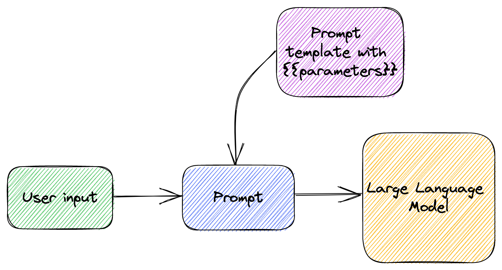
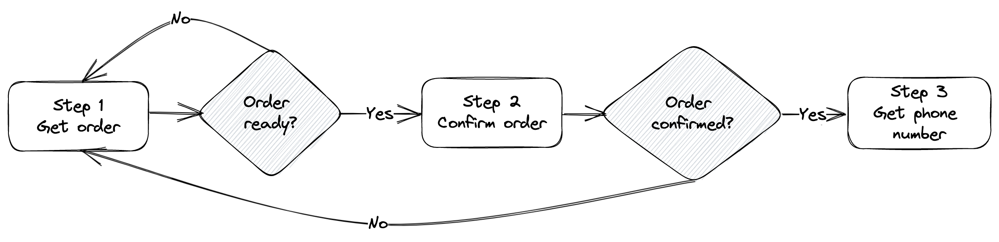

Prompt Engineering

In this chapter:
- Designing powerful prompts.
- Using templates for prompts.
- Selecting between multiple templates.
- Chaining prompts to perform complex tasks.
This chapter is all about prompts, the fundamental way we interact with large language models. Prompts are key components of any solution built around these models, so we need to have a solid understanding of how to leverage them to the maximum.
We’ll start with prompt design and tuning and see how small tweaks to the prompt can elicit very different responses from a large language model. We’ll iterate over a simple example and look at some tips on what we should include in a prompt.
If we’ll spend so much time coming up with the perfect prompt, we’ll probably want to reuse it. We’ll see how we can do this via prompt templating. We’ll implement a generic function that will enable us to specify prompt templates as JSON files, then load these to fill in the prompts we send to the model.
In many scenarios, we have multiple prompt templates we can use, and we need to solve the problem of which one to pick based on what the user wants. Luckily, understanding user intent is something large language models are great at. We’ll implement prompt selection and automate picking the right prompt.
Most non-trivial tasks can’t be accomplished through a single prompt – we’ll have to divide and conquer. We can complete complex tasks with multiple (connected) prompts, something known as prompt chaining. We’ll cover the arguably simplest type of chaining – maintaining a chat history, then we’ll look at a more complex scenario involving a multi-step workflow. Let’s start with the basics though: design.
Prompt design & tuning
In chapter 1 we briefly touched on the emerging discipline of prompt engineering and defined it as the process of creating and optimizing natural language prompts for large language models. Let’s see why prompts are such a key piece of integrating these models into software solutions.
We’ll start with a simple scenario: we have some content we’d like summarized. You can use https://chat.openai.com/ for the examples in this section, or the OpenAI playground (https://platform.openai.com/playground/). Listing 3.1 shows the content – a business plan for a new minimalist phone.
Our company aims to disrupt the smartphone market by introducing a minimalist
phone that focuses on the essentials. We believe that in a world where
technology is becoming increasingly complex, there is a growing demand for a
device that simplifies our lives and allows us to be more present in the moment.
Our minimalist phone will have a simple and sleek design, with a monochrome
display and limited features. It will focus on the core functionalities of a
phone, such as calling, texting, and taking photos, while eliminating
unnecessary distractions and time-wasting apps. By doing so, our phone will
promote mindfulness and productivity, while also reducing screen time and
digital overload.
In terms of pricing, we plan to position our minimalist phone as a premium
product that is worth the investment. We believe that our target audience, which
consists of busy professionals, digital minimalists, and people who value
simplicity and mindfulness, will be willing to pay a premium for a device that
aligns with their values and lifestyle.
To market our minimalist phone, we will leverage social media and influencer
marketing, as well as targeted advertising campaigns. We will also partner with
like-minded brands and organizations that share our vision of simplifying and
improving people's lives. Finally, we will prioritize customer satisfaction and
offer exceptional customer service and support, as well as regular updates and
improvements to the phone's software and functionality.
Overall, we are confident that our minimalist phone will revolutionize the
smartphone industry and offer a refreshing alternative to the current state of
technology. We look forward to launching our product and making a positive
impact on people's lives.
Listing 3.1: A business plan for a minimalist phone (AI generated).
We’d like to get this summarized into a few short bullet points, which we can surface in our UI. We prompt the model with a simple prompt shown in listing 3.2 (business plan omitted).
Summarize this business plan "<business plan from listing 3.1 goes here>"
Listing 3.2: Prompt to summarize the business plan.
We might get back something like listing 3.3 (again, large language models are non-deterministic so you might get a different response).
The business plan outlines a strategy to disrupt the smartphone market by
introducing a minimalist phone that focuses on the essentials, with a simple and
sleek design, limited features, and a monochrome display. The phone will be
positioned as a premium product, targeting busy professionals, digital
minimalists, and people who value simplicity and mindfulness. The company plans
to leverage social media, influencer marketing, and partnerships with
like-minded brands to market the phone. The company will prioritize customer
satisfaction, offer regular updates and improvements, and aims to make a
positive impact on people's lives.
Listing 3.3: Summary of business plan.
This is a good summary, but not quite what we want – let’s explicitly ask for bullet points. Listing 3.4 shows the refined prompt.
Summarize this business plan "<business plan from listing 3.1 goes here>" in a
few short bullet points
Listing 3.4: Refined prompt to summarize the business plan.
Since we introduced the term, let’s also define it:
Definition: A refined prompt is a prompt revised and optimized through multiple iterations to elicit the most accurate and desirable responses from a large language model. This typically involves tuning the language, syntax, structure, and context of the prompt to make it more specific and effective in achieving the desired outcome.
Refined prompts are crucial for improving the performance of large language models across all applications. In our case, the refined prompt gives us the output in listing 3.5.
* Company aims to disrupt smartphone market with minimalist phone
* Phone will have simple and sleek design, with limited features
* Focus on core functionalities of calling, texting, and photos
* Target audience consists of busy professionals, digital minimalists, and those
who value simplicity and mindfulness
* Phone will be positioned as a premium product worth investment
* Marketing will leverage social media, influencer marketing, and targeted
advertising
* Partnership with like-minded brands and organizations
* Priority on customer satisfaction and support with regular updates and
improvements
* Goal is to revolutionize smartphone industry and make positive impact on
people's lives
Listing 3.5: Summary of business plan.
This is closer, but still too many bullet points and too many words – our UI can’t fit all of this. Let’s try again with listing 3.6.
Summarize this business plan "<business plan from listing 3.1 goes here>" in no
more than 5 bullet points, at most 7 words each
Listing 3.6: More detailed prompt.
This gets us the output in listing 3.7.
* Minimalist phone focusing on essentials
* Promotes mindfulness and productivity
* Premium product for busy professionals
* Leverage social media and partnerships
* Revolutionize smartphone industry with simplicity
Listing 3.7: Summary of business plan.
This is close to what we want. This simple example was an exercise in prompt design and tuning.
Definition: Prompt design is the process of constructing a high-quality input sequence, or prompt, that will guide the model to generate a desired output.
The prompt typically consists of a few words, phrases, or sentences that provide context and direction for the model to generate text that aligns with the user's intention. Effective prompt design significantly improves the quality and relevance of the generated text.
Prompt design involves carefully selecting and arranging the words and phrases in the prompt to guide the model toward the desired output, while avoiding ambiguity or confusion.
We are still discovering the best, most effective prompt recipes, but a starting point for a good prompt includes telling the model:
- Who to act like - This can be “you are an AI assistant”, or “respond as a high-school teacher”, or “act like Stephen King”.
- Additional context – We’ll cover this in a lot more depth later on when we discuss memory in chapter 5. For now, think of this as any additional information that helps clarify the ask or provides data that can be used when generating the answer.
- Who the audience is – You can tweak the response by being specific about the audience (e.g., “explain like I’m 5 years old”).
- How the output should look like – You can be as descriptive as needed. *“Short summary”, “500 word article”, or “5 bullet points no more than 7 words *each”.
- How to go about generating the output – Additional instructions for the *large language model, like “think step by step”.
- Examples – It helps to give examples; we’ll talk more about this in the next chapter. Examples are good way of showing the large language model what you expect.
- Proper syntax – Using the correct capitalization, grammar, and punctuation *helps (as it should more closely match data the model has been trained on).
For example, if we’re talking about integration within other systems, we care
about the shape of the output. Instead of asking summarize this business plan,
we are specific about how we want the format (5 bullet points, no more than 7
words each).
Of course, for complex scenarios, you won’t get the prompt right in one go. You’ll have to refine it several times. This iterative process is called prompt tuning.
Definition: Prompt tuning refers to the iterative process of refining and adjusting prompts used with large language models. In prompt tuning, the goal is to create prompts that are optimized to produce the desired output from the model.
People are getting more and more interesting outputs out of large language models by coming up with intricate prompts. These highly tuned prompts are colloquially called superprompts.
Sidebar: Superprompt example – interview practice1
An example of one of this type of “magical” prompt is a prompt that enables you to practice interviewing with ChatGPT. In the ChatGPT UI, you can start with:
I want you to act as an interviewer. I will be the candidate and you will ask me the interview questions for the {{position}} position. I want you to only reply as the interviewer. Do not write all the conversation at once. I want you to only do the interview with me. Ask me the questions and wait for my answers. Do not write explanations. Ask me the questions one by one like an interviewer does and wait for my answers. My first sentence is "Hi".Replace
{{position}}with the actual position you want to practice for, then you can use ChatGPT to help you prepare!Note the detailed description of how the model should reply and what it should not output. This prompt was likely created with a lot of tuning, starting from a simpler ask then iterating as the model replied in unrealistic ways. For example, the “do not write all the conversation at once” probably ended up there as without it the large language model would imagine a whole interview exchange and respond with it in one go.
A somewhat magical phrase that seems to help in many prompts is “think step by step” or variations of it, like “think about this logically”. This is called chain-of-thought, explicitly asking the large language model to list the steps it takes to arrive at a result rather than just producing the result.
Chain-of-thought prompts
For example, for more complex questions that involve multiple steps, the model
might offer a wrong response without additional priming. The prompt in listing
3.8, when run against text-davinci-003, gets the wrong response.
In a bouquet of 12 flowers, half are roses. Half of the roses are red. How many
red roses are in the bouquet?
Listing 3.8: Multiple-step problem prompt.
The response is 6 roses, which is wrong. gpt-3.5-turbo seems to answer this
correctly, but you get the point – more convoluted questions could elicit a
wrong response. Interestingly enough, if we enhance our prompt with “think step
by step” as in listing 3.9, the model produces the correct response.
In a bouquet of 12 flowers, half are roses. Half of the roses are red. How many
red roses are in the bouquet? Think step by step.
Listing 3.9: Chain-of-thought prompt.
Now we get a more detailed, step-by-step answer, shown in listing 3.10.
Step 1: Half of 12 flowers is 6.
Step 2: Half of 6 roses is 3.
Answer: There are 3 red roses in the bouquet.
Listing 3.10: Chain-of-thought prompt response.
Turns out the model could generate the correct response all along, but it needed additional guidance. In some cases, simply adding “think step by step” or similar phrases is enough. In other cases, including an example of how this step-by-step reasoning looks like in the prompt helps. See Listing 3.11 for an example of this.
Q: In a bouquet of 24 flowers, half are roses. A third of the roses are red. How
many red roses are in the bouquet?
A: The bouquet has 24 flowers, so half of them being roses means there are 12
roses. A third of the roses are red out of 12 rose, so there are 4 red roses in
the bouquet.
Q: In a bouquet of 12 flowers, half are roses. Half of the roses are red. How
may red roses are in the bouquet?
A:
Listing 3.11: Chain-of-thought prompt with examples.
When using this prompt with text-davinci-003, the response mimics the example
and arrives at the correct answer.
Definition: Chain-of-thought prompting is a technique that can be used to improve the reasoning and accuracy performance of large language models by providing rationales for a given word or phrase. It improves the reasoning ability of large language models by prompting them to generate a series of intermediate steps that lead to the final answer of a multi-step problem.
Chain-of-though explicitly encourages the large language model to generate intermediate rationales for solving a problem, either through a phrase like “think step by step” or by providing a series of reasoning steps in a demonstration that is part of the prompt.
In general, chain-of-thought prompting can elicit better reasoning from large language models on logic, math, and symbolic reasoning tasks2. Keep this in mind – sometimes a small phrase added to a prompt can get dramatically better replies, and providing examples helps. While large language models can demonstrate surprisingly good reasoning skills, their intelligence is very different than how our brains work. Prompt engineering aims to bridge the gap and identify the right way to ask questions to get the best responses.
Nowadays there are many repositories of tried and tested prompts online. We already saw a superprompt from https://github.com/f/awesome-chatgpt-prompts. Wolfram has a prompt repository at https://resources.wolframcloud.com/PromptRepository/. Many other prompt repositories are available on GitHub.
As we just saw, coming up with a good prompt is hard work. In fact, from personal experience, I can say that 80% of lighting up a scenario involving a large language model is coming up with the right prompt (one of the reasons prompt engineering is emerging as a new discipline). So, what do we do once we find the perfect prompt?
Prompt templates
Once we do come up with the perfect prompt, we want to store this somewhere and reuse it. We can parameterize the context (instance-specific information) based on the scenario while maintaining the common part of the prompt.
Let’s implement a simple templating system: we’ll store the template as a JSON
file. This should contain a prompt. The customizable parts we put around {{}},
for example {{action}} is customizable and we replace it with some actual
value when we make a call to OpenAI.
We can optionally set other parameters, like we discussed in chapter 2 (e.g.
n, max_tokens, temperature, stop).
Listing 3.12 shows an example of templating a prompt that can help us with some legal work. Let’s say after careful tuning, we realized we get the best results if we explicitly tell the large language model it is a lawyer, and lower the temperature. We can store this in lawyer.json.
{
"temperature": 0.2,
"max_tokens": 100,
"prompt": "You are a lawyer. {{action}}: {{document}}"
}
Listing 3.12: Lawyer prompt template.
In this case we customize temperature (lower since we want some help with
legal documents and we don’t want the model to get too creative) and
max_tokens (since we’re playing with the API while learning and don’t want to
pay too much for running code samples). Our prompt tells the model to act as a
lawyer and has two customizable parts: an action and a document.
Figure 3.1 shows how prompt templating works.

We have a prompt template with some parameters. The prompt template contains our
tuned prompt text, but also includes some customizable parts captured between
{{}}. We take the user input and use that to replace the {{}} parameters and
end up with a prompt we send to the large language model.
We can then implement a Python class that handles templates, as seen in listing 3.13.
import copy
import json
import openai
import os
import re
openai.api_key = os.environ['OPENAI_API_KEY']
def insert_params(string, **kwargs):
pattern = r"{{(.*?)}}"
matches = re.findall(pattern, string)
for match in matches:
replacement = kwargs.get(match.strip())
if replacement is not None:
string = string.replace("{{" + match + "}}", replacement)
return string
class Template:
def __init__(self, template):
self.template = template
def from_file(template_file):
with open(template_file, 'r') as f:
template = json.load(f)
return Template(template)
def completion(self, parameters):
instance = copy.deepcopy(self.template)
instance['prompt'] = insert_params(instance['prompt'], **parameters)
return openai.Completion.create(
model='text-davinci-003',
**instance)
Listing 3.13: Consuming a completion prompt template.
This might look a bit complicated, but it really isn’t. First, we implement an
insert_params() function, which takes a string and a set of keyword arguments
(see sidebar). It searches for {{}} parameters using a regular expression and
replaces these with the actual values provided as kwargs.
Next, we define a Template class. The constructor takes a template dictionary
and stores it as a class member. We define a static from_file() method which
loads the template JSON from the given template_file and constructs a
Template object based on that. Finally, we define a completion() method that
takes some parameters (in our case, these would be the actual action and
document), makes a deep copy of the prompt template which it updates with the
given parameters, then calls the OpenAI Completion API, and expand the
parameters available in template.
Sidebard: Keyword Arguments in Python
In Python,
**kwargsis a special syntax used to pass a keyworded, variable-length argument list to a function. The**kwargsparameter in a function allows you to pass an arbitrary number of keyword arguments (as key/value) to that function.
**kwargscan be used along with other parameters in a function definition, but it should always come after all the other parameters, including any default parameters.The
openai.Completion.create(andopenai.ChatCompletion.create()) expect named arguments (liken=1,max_tokens=100etc.). Instead of us checking if each of the supported arguments appears in our JSON files and composing the function call based on that, we simply forward the dictionary object (key/value pairs) we deserialized from JSON to thecreate()function. It will conveniently pick up the parameters it understands from there – for example if we specify"temperature": 0.5in our JSON, when we load the JSON file this gets mapped into the key/value pair"temperature": 0.5, then resolved as the function argumenttemperature=0.5.This is not a Python book but using this “trick” simplifies our code a lot, so it’s worth understanding. You can think of this as forwarding the properties from the JSON file directly to the function, then the function interprets the ones it understands and ignores the rest.
We do the same with the
parameterswhen we callinsert_params()– this formats the string so the function looks for the keys that appear inside the string between{{}}and it ignores additional key/value pairs.
Now we have a template and a function that can take it and turn it into an API
call. The Template class is part of the llm_utils module introduced in
chapter 1 and covered in appendix A.
We’ll be using prompt templates throughout the remainder of the book. We already saw how to call the OpenAI API directly and some of the customizable parameters. Instead of repeating the OpenAI API calls, we’ll just show the prompt templates and parameters.
Since we’ll be using prompt templates throughout the remainder of the book, this module gives us an easy way to import them when needed in our code samples. Listing 3.14 shows how this works end-to-end.
from llm_utils import Template
response = Template.from_file('lawyer.json').completion(
{'action': 'draft',
'document': 'a nondisclosure agreement (NDA) between two parties'})
print(response.choices[0].text)
Listing 3.14: Using the prompt template.
Now we can reuse our prompts by simply loading the JSON prompt template file and
calling the completion() function with the right parameters to be replaced.
To keep things simple, we used text-davinci-003. Since this is more expensive
than gpt-3.5-turbo, let’s also provide an alternative that templates chat
completions. Listing 3.15 shows how our lawyer large language model template
would look like for chat completions. We’ll store this as lawyer_chat.json.
{
"temperature": 0.2,
"max_tokens": 100,
"messages": [
{ "role": "system", "content": "You are a lawyer." },
{ "role": "user", "content": "{{action}}: {{document}}" }
]
}
Listing 3.15: Lawyer prompt template for chat completion.
The JSON looks a lot like the one in listing 3.11, except instead of a prompt
string property we have a messages array property containing a list of role
and content pairs. This is very much in line with the differences between the
completion API and the chat completion API.
Let’s also implement the corresponding ChatTemplate class (listing 3.16).
import copy
import json
import openai
import os
import re
openai.api_key = os.environ['OPENAI_API_KEY']
def insert_params(string, **kwargs):
pattern = r"{{(.*?)}}"
matches = re.findall(pattern, string)
for match in matches:
replacement = kwargs.get(match.strip())
if replacement is not None:
string = string.replace("{{" + match + "}}", replacement)
return string
class ChatTemplate:
def __init__(self, template):
self.template = template
def from_file(template_file):
with open(template_file, 'r') as f:
template = json.load(f)
return ChatTemplate(template)
def completion(self, parameters):
instance = copy.deepcopy(self.template)
for item in instance['messages']:
item['content'] = insert_params(item['content'], **parameters)
return openai.ChatCompletion.create(
model='gpt-3.5-turbo',
**instance)
Listing 3.16: Consuming a chat completion prompt template.
Not very different from listing 3.13. We have the same insert_params()
function. We still take a template JSON in the constructor and store it as a
member, and we have a static from_file() method. The only difference is in the
completion() method: instead of inserting the parameters in the prompt
string, we now iterate over the messages and insert parameters in each content
item. This class is also available in llm_utils.
The equivalent call that puts it all together is very similar to listing 3.14: see listing 3.17.
from llm_utils import ChatTemplate
response = ChatTemplate.from_file('lawyer_chat.json').completion(
{'action': 'draft',
'document': 'a nondisclosure agreement (NDA) between two parties'})
print(response.choices[0].message.content)
Listing 3.17: Using the lawyer chat completion prompt template.
We now have a way to store valuable prompts (including additional call
parameters like temperature) as JSON files, and only customize the moving
parts. This is in line with good software practices like the
“don’t-repeat-yourself” principle.
In general, when integrating a large language model into a software solution, you will have one or more tuned prompts you’ll want to use. A lot of the prompt content will be common across calls – this is the secret sauce you’ll spend time tuning. Some parts will be different from API call to API call, based on the current context. Those are parameters to the template.
In most cases though, you will end up with multiple useful prompt templates. How can you find the right one to pick?
Prompt selection
Selecting the right prompt for the job can seem complicated, but we have an easy solution: we can rely on the large language model to identify which prompt to pick! Figure 3.2 shows how this will work.

Figure 3.2: Prompt selection.
The 3 steps of prompt selection are:
- We start with a user ask. We use a selection prompt template in which we put the user ask to end up with a selection prompt. We send this to the large language model.
- We get back a selected prompt and input for that prompt. These are produced by the model based on the user ask.
- We then use the prompt template selected by the large language model and put the selected input into it to come up with the final prompt which we’ll send to the model to accomplish the task.
For example, let’s say we have 2 tuned prompts: a lawyer prompt and a writer
prompt. The lawyer prompt we saw in the previous section (listing 3.15), taking
an action and a document and acting as a lawyer. This is great for drafting
and NDA, but not as good for creative writing. Our writer prompt is captured in
listing 3.18, which we’ll save as writer_chat.json.
{
"temperature": 1,
"max_tokens": 100,
"messages": [
{ "role": "system", "content": "You are a talented writer." },
{ "role": "user", "content": "{{action}}: {{document}}" }
]
}
Listing 3.18: Writer prompt template for chat completion.
For simplicity’s sake, we’re also using action and document parameters in
this case (and our examples aren’t highly-tuned prompts, but that doesn’t matter
– here we’re focusing on the prompt selection mechanism rather than the prompts
themselves).
Let’s say instead of an NDA draft, we want a haiku. Listing 3.19 uses the writer prompt for this.
from llm_utils import ChatTemplate
response = ChatTemplate.from_file('writer_chat.json').completion(
{'action': 'compose',
'document': 'a haiku about large language models'})
print(response.choices[0].message.content)
Listing 3.19: Using the writer chat completion prompt template.
When I ran this code, I got the following response:
Giant language minds
Transforming words and culture
Limitless power
With the two prompt templates ready, let’s now implement the selection mechanism. We will add another prompt, which we will use to pick the best prompt between our lawyer and writer prompts for the user ask.
Listing 3.20 shows the prompt selection prompt, which we’ll save as
selection_chat.json.
{
"temperature": 0,
"max_tokens": 100,
"messages": [
{ "role": "system", "content": "You are an AI assistant. You will identify the best way to assistant the user, as a lawyer or as a writer, and also identify the action and document the user wants help with. Your reply will be just a JSON object containing only the properties as, ask, and document." },
{ "role": "user", "content": "I need an NDA between two parties" },
{ "role": "assistant", "content": "{\"as\": \"lawyer\", \"action\": \"draft\", \"document\": \"an NDA between two parties.\"}" },
{ "role": "user", "content": "I'd like a haiku about large language models" },
{ "role": "assistant", "content": "{\"as\": \"writer\", \"action\": \"compose\", \"document\": \"a haiku about large language models.\"}" },
{ "role": "user", "content": "{{ask}}" }
]
}
Listing 3.20: Prompt selection prompt template for chat completion.
We’re using a temperature of 0, since we want the large language model to do
its best at identifying the user ask and not get creative (at least not at this
stage). This prompt is tuned to ensure, as much as possible, the response we get
is in the format we want, so we can process it automatically.
We are also using a couple of example asks and responses in the prompt. This is
called few-shot learning, which we’ll cover in depth in chapter 4. At a
high-level, we are providing examples, so the large language model understands
the pattern we want for our responses. In our case, we’re actually looking for a
JSON object with the properties as (can be lawyer or writer), action,
and document. We described the format in the first system message, but
showing a couple of examples helps.
Let’s take this for a spin: we’ll see what this prompt says about a couple of asks, as shown in listing 3.21.
from llm_utils import ChatTemplate
selection = ChatTemplate.from_file('selection_chat.json')
response = selection.completion(
{'ask': 'I need an open-source license document'})
print(response.choices[0].message.content)
response = selection.completion(
{'ask': 'I need a funny skit'})
print(response.choices[0].message.content)
Listing 3.21: Using the prompt selection prompt template for chat completion.
Running this code should output something like listing 3.22.
{"as": "lawyer", "action": "draft", "document": "an open-source license document."}
{"as": "writer", "action": "write", "document": "a funny skit."}
Listing 3.22: Selection prompt response.
In the first case, we get back, as expected, lawyer, with the action draft
and the document an open-source license document. In the second case,
writer, with write and funny skit.
We are leveraging the large language model to figure out what the user intent is. In general, this mechanism of prompt selection works very well since understanding user intent is a natural language processing task, a task at which large language models excel.
Let’s put everything together now, and write a small program that takes some
user input, identifies which prompt to use (using selection_chat.json), then
invoke the identified prompt. Listing 3.23 shows the end-to-end.
from llm_utils import ChatTemplate
import json
selection = ChatTemplate.from_file('selection_chat.json')
while True:
ask = input('ask: ')
if ask == 'exit':
break
response = selection.completion({'ask': ask})
print(response.choices[0].message.content)
selection = json.loads(response.choices[0].message.content)
response = ChatTemplate.from_file(selection['as'] + '_chat.json').completion({
'action': selection['action'],
'document': selection['document']})
print(response.choices[0].message.content)
Listing 3.23: Interactive ask with prompt selection.
We now have an interactive session where the user types in an ask. We quit if
this is exit, otherwise we invoke our selection prompt. For debugging
purposes, we print the content of this first response. Assuming the response is,
as requested, valid JSON with the properties we require, we use the
json.loads() function to parse the JSON string into an object.
We then load the prompt we’ll use to accomplish the user ask. We use
selection['as'] prepended to '_chat.json', to load the appropriate template
prompt. For example, if our JSON object has "as": "lawyer", the string becomes
'lawyer_chat.json'.
We also pass in the two parameters, action and document, from the JSON
object. This is done for clarity, as we could’ve used keyword arguments here and
simply pass **selection.
We then print the response we get back. You can run this code and play with it, trying different asks. This implements the system we described in figure 2. This concrete implementation is shown in figure 3.3.

Figure 3.3: Prompt selection for lawyer and writer prompt templates.
- We replaced the generic “user input” with an actual ask, “I need a funny skit”.
- Using the selection prompt will give us back a JSON object containing the
template we should use (
writerin this case) and the parameters we need to provide to the template.
Until now, we only saw simple examples – sending some prompt and printing the reply. This is the first time when we stepped up our game and ran a 2-step process:
- We first identify user intent and select the best prompt for the task.
- We use the selected prompt to accomplish the task.
We just built a pipeline that includes a couple of prompts! This is also known as prompt chaining.
Prompt chaining
For any but the simplest tasks, it’s unlikely we can accomplish them through a single prompt. We need to facilitate a back and forth between the user and the large language model.
Definition: Prompt chaining refers to the process of generating a sequence of prompts that build upon each other to achieve a specific task or goal.
Prompt chaining involves using the output of one prompt as the input to the next prompt, gradually refining the input until we achieve the desired output.
The goal of prompt chaining is to improve the accuracy and relevance of the model's output by providing more context and guidance for the model to work with. We just saw an example of this in the previous section, where we first identify user intent, which persona (lawyer or writer) is best suited to help the user, then picked the follow-up prompt.
The term “prompt chaining” is pretty broad: in some cases, you will see this used when covering the simpler scenario of maintaining chat history and sending it to the large language model on each call.
Maintaining context
We saw a simple command line chat in chapter 2, listing 2.8. Let’s revisit
command line chat here, focusing on the history part. First, we’ll create an
interactive chat using our new ChatTemplate, but without maintaining any
history between subsequent calls. Listing 3.24 shows this initial
implementation.
from llm_utils import ChatTemplate
chat = ChatTemplate(
{'messages': [{'role': 'system', 'content': 'You are an AI chat program.'},
{'role': 'user', 'content': '{{prompt}}'}]})
while True:
prompt = input('user: ')
if prompt == 'exit':
break
message = chat.completion({'prompt': prompt}).choices[0].message
print(f'{message.role}: {message.content}')
Listing 3.24: Command line chat without history.
Here we don’t load the template from a file, rather we create it from a
dictionary. We only set the messages, the first one being the system manage
telling the AI who to act like, and the second being the user prompt, which is a
parameter we replace at runtime with the input user is typing.
This works, and we can get the model to answer your questions, but we might wrongly assume it “sees” the same conversation as we do. For example, we can ask “How to iterate over the files in a directory using the shell?”. This should give us back a quite detailed reply on how to do this in a Unix-like shell, including a small code sample:
To iterate over the files in a directory using the shell, you can use a combination of the
forloop and thelscommand. Here is an example command:for file in /path/to/directory/*; do echo $file doneThis will loop through each file in the directory specified by
/path/to/directory/, and print the file name to the console using theechocommand. You can replaceechowith any other command you wish to run on each file.
But say we’re on a Windows PC, and would actually like to learn how to do this in PowerShell. If our next prompt is “How do I do this in PowerShell?”, the response we get is:
I'm happy to help. What exactly do you want to do in PowerShell? Whether it's a specific task or a general question about the language, feel free to ask and I'll do my best to assist you.
Obviously, the large language model doesn’t know what “this” refers to in this context, since it doesn’t remember the first question we asked.
Let’s update our code to maintain a history of the chat. Listing 3.25 shows this.
from llm_utils import ChatTemplate
chat = ChatTemplate(
{'messages': [{'role': 'system', 'content': 'You are an AI chat program.'}]})
while True:
prompt = input('user: ')
if prompt == 'exit':
break
chat.template['messages'].append({'role': 'user', 'content': prompt})
message = chat.completion({}).choices[0].message
print(f'{message.role}: {message.content}')
chat.template['messages'].append(
{'role': message.role, 'content': message.content})
Listing 3.25: Command line chat with history.
In this updated sample, we keep a history of the chat in the messages list. We
append each user prompt as a new item, then we also append the response we get.
Now if we ask the same questions, “How to iterate over the files in a directory
using the shell?”, then “How do I do this in PowerShell?”, the second question
yields us this reply:
In PowerShell, you can also use a
foreachloop to iterate over the files in a directory. Here's an example:foreach ($file in Get-ChildItem -Path 'C:\path\to\directory') { # Do something with $file Write-Host $file }In this example,
Get-ChildItemcommand lists all the files inC:\path\to\directory, and then theforeachstatement loops through the files one by one, storing each file in the$filevariable. You can replaceGet-ChildItemwith any PowerShell cmdlet that generates a list of files (e.g.Get-Content,Select-String, etc.).
The large language model now understands what “this” refers to, since on each chat prompt we pass back the whole conversation.
In this example, prompt chaining refers to maintaining the context of the chat across multiple prompts, so the large language model can use it when generating a reply.
Figure 3.4 shows prompt chaining when using chat history.

Figure 3.4: Prompt chaining when using chat history.
This is a simple loop consisting of:
- Use provides some input.
- We combine this with the chat history to come up with a prompt which we send to the large language model.
- We get a response back. We update the history, so it contains the latest prompt and response, then we go back to step 1.
To recap, when we used prompt selection, we chained prompts by using the first prompt to determine what the second prompt will be. In this example, we chained prompts by maintaining a history and making it available to the large language model on each call. The scenarios are quite different, but they are both examples of prompt chaining.
Implementing a workflow
Let’s look at a more complex scenario that implements a short workflow, which includes both maintaining context across prompts and prompt selection. We’ll implement a chat bot that handles coffee shop orders. Our workflow will have 3 steps: get the order, confirm the order, get contact information.
On step 1, we will get the order from the user. This can happen over multiple chat interactions. We’ll have to maintain a history of the chat and continue the conversation until we have the full order. Then we move to step 2.
In step 2, we confirm the order with the user. If they would like to change anything, we go back to step 1. Once confirmed, we go to step 3.
In step 3, we ask for a phone number.
Notice this example requires both chat history and a prompt selection mechanism. Figure 3.5 shows the high-level workflow.

Figure 3.5: 3-step workflow.
We will implement this with 2 prompts. The first prompt will handle the order interaction and confirmation, while the second prompt will handle getting the phone number.
Let’s look at the prompts first. Listing 3.26 shows the prompt for steps 1 and
2, saved as order.json.
{
"temperature": 0,
"messages": [
{ "role": "system", "content": "You are taking orders for a coffee shop. The beverage items on the menu are: drip coffee, espresso, americano, tea (green or herbal). They come in small, medium, and large sizes. The food items are: croissant (plain or butter), muffin (blueberry or cheese). Identify what the customer wants to order and ask for clarifications when needed. You must get enough details for a coffee shop employee to be able to fulfil the order. For example, an order cannot be fulfilled without knowing the beverage size, or tea flavor, or type of croissant, or type of muffin. You must double check the order with the customer. As soon as the customer confirms the order, you will reply with the word ORDER followed by the order details then by the word DONE. For example: 'ORDER a small herbal tea DONE'." },
{ "role": "assistant", "content": "Hi! What can I get for you today?" }
]
}
Listing 3.26: Order and confirmation prompt template.
Using this prompt, we would continue the chat until we see ORDER and DONE in
the response. Then we should be able to extract the actual order from between
these words.
Note the prompt asks the large language model to double check the order. Using
this prompt combined with our chat with history, the model should continue the
conversation until it has enough details for the order (step 1), confirm the
order with the customer (step 2), then, if the order is confirmed, send a
specially formatted reply which we can interpret to stop this chat and switch to
the next prompt for getting the phone number. The second prompt appears in
listing 3.27 (saved as phone.json).
{
"temperature": 0,
"messages": [
{ "role": "system", "content": "You are getting a customer phone number for an order they just placed. Once you have it, respond with PHONE, followed by the number, followed by DONE. For example 'PHONE 555-000-1234 DONE'." },
{ "role": "assistant", "content": "Can I please have your phone number?" }
]
}
Listing 3.27: Phone number prompt template.
This simpler prompt should keep the conversation going until a phone number is provided (step 3).
Now let’s stich it all together. Listing 3.28 implements the workflow.
from llm_utils import ChatTemplate
import re
def step(template_file, pattern):
chat_template = ChatTemplate.from_file(template_file)
print(chat_template.template['messages'][-1]['content'])
while True:
prompt = input('Customer: ')
chat_template.template['messages'].append({'role': 'user', 'content': prompt})
message = chat_template.completion({}).choices[0].message
if 'DONE' in message.content:
return re.search(pattern, message.content, re.DOTALL).group(1).strip()
print(f'{message.content}')
chat_template.template['messages'].append({'role': message.role, 'content': message.content})
order = step('order.json', r'ORDER(.*)DONE')
phone = step('phone.json', r'PHONE(.*)DONE')
print()
print(order)
print(phone)
Listing 3.28: Coffee ordering workflow.
We implement a step() function which takes as arguments a prompt template file
and a regular expression. We load the template, output the last message from the
template. In our two templates, these would be “Hi! What can I get for you
today?” and “Can I please have your phone number?”
We then start the chat loop, waiting for input from the customer. We continue
the chat, adding both the customer input and the large language model response
to the chat history, until the response contains the word DONE.
Once we see DONE, we search for the provided regular expression and return the
matching string. This lets us extract the order, captured between ORDER and
DONE (r'ORDER(.*)DONE') and the phone number, captured between PHONE and
DONE (r'PHONE(.*)DONE').
We invoke this step() function for the two prompts and the corresponding
regular expressions. Finally, we print the extracted order and phone number.
A conversation might look like this:
Hi! What can I get for you today?
Customer: An americano please
Sure thing! What size would you like your americano? We have small, medium, and large.
Customer: Medium
Great! Anything else for you today? We have drip coffee, espresso, tea (green or herbal), croissants (plain or butter), and muffins (blueberry or cheese).
Customer: That's it
Alright, so just to confirm, you would like a medium americano. Is that correct?
Customer: Wait, I'd also like a butter croissant
Sure thing! So you would like a medium americano and a butter croissant. Is that correct?
Customer: Yes
Can I please have your phone number?
Customer: 555-000-1234
a medium americano and a butter croissant
555-000-1234
In the example above, the model does as instructed in the prompt template and confirms the order (step 2 of our workflow). If the customer changes their mind and wants to add something to the order, the conversation continues. Once the order is confirmed, we go to step 3 and start the phone number conversation.
The final print() statements prove the right information was extracted, which
we could pick up and pass on to some other subsystem.
Unlike our first prompt selection example, where we got the large language model
to output formatted JSON, in this case we used a couple of “special” words to
allow us to post-process the response. Either approach works. In this case, JSON
output would’ve made the prompts a bit longer and our code that figures out when
to stop a bit more complicated than what we’re doing now (checking for the
substring DONE). For more complex output, as we saw during prompt selection,
JSON is easier to parse.
This was a simple workflow demonstrating prompt chaining with 3 steps and 2 prompts. We relied both on chat history (for the conversation parts), and on prompt selection – our code figures out when to stop running the ordering chat and switch to the phone chat. Of course, we can implement more complex workflows involving more steps and more complex prompt selection.
Implementation layers
An interesting thing to note, and to keep in mind as you work with large language models, is that implementation spans both code and natural language (prompts).
In our simple workflow example, we combined steps 1 and 2 in a single prompt, so
our decision logic of whether to go from step 1 to step 2 and from step 2 to
step 3 or back to 1 was “implemented” mostly through natural language in the
order.json prompt (plus the code we use to determine when we are switching to
step 3, that is seeing the substring DONE in the response).
We can move more of the implementation in the prompt, for example have a single prompt that instructs the model to get the phone number too once the order is confirmed, then return both the order and the phone number in some specific format we can pick up. One drawback of pushing more logic in the prompt is that we end up with longer prompts where we need to explain more to the large language model and rely on it to interpret more complex instructions the way we expect.
Alternately, we can move more of the implementation in the code, for example
have a prompt that gets the order and a separate prompt for the confirmation.
For example, have the confirmation prompt instruct the model to respond with
CONFIRMED or NOT CONFIRMED, then we can in the code implement the decision
logic of whether to go back to step 1 (continue getting the order) or move to
step 3 (get the phone number). One drawback of pushing more logic in the code is
ending up having to maintain more lines of code and a more prompts.
On one extreme, we have just one huge prompt. On the other extreme, we have only code - that’s what we were doing before large language models were a thing. In practice, we need to find the sweet spot between these two extremes. Of course, there is no one-size-fits-all to do this. What belongs in code and what belongs in prompts depends on the scenario. If it is easy to get the expected responses out of the large language model, we use prompts. When we need more deterministic behavior, or run into token limits, or want to save costs, we use code.
In this chapter we taught the model, through our prompts, how to return output formatted in a very specific way. You probably noticed many of the prompts also included examples of how we expected the responses to look like. Even though the models are pretrained, turns out they can still “learn” some things. The next chapter digs into ways we can teach large language models.
Summary
- Prompt tuning is the process of tweaking a prompt that elicits the responses we expect from large language models. This yields a refined prompt.
- A good prompt has proper syntax and includes who the model should act like, additional context, who the audience is, how the output should look like, how to generate the output, and examples.
- Prompt templates allow us to reuse good prompts by parameterizing instance-specific parts and keeping the rest of the prompt unchanged.
- Prompt selection means deciding which prompt to pick out of several options to best complete a task.
- Prompt chaining is the process of connecting multiple prompts together, either through prompts selection, by maintaining a history of previous prompts and responses, or both.
- Working with large language models, we have two layers of implementation: one in code, one in natural language (in the prompts).
- We can push logic from one layer to another, depending on the specific problem we are trying to solve and tradeoffs we need to consider.